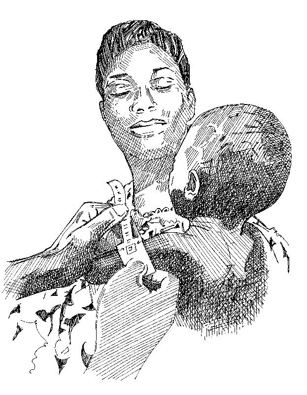

Mesure du MUAC
| Couleur | État nutritionnel | Périmètre brachial (cm) | Périmètre brachial (mm) | Action |
|---|---|---|---|---|
| Rouge | Malnutrition sévère | <11,5 cm* | <115 mm* | Orienter vers l’établissement de santé le plus proche fournissant une alimentation thérapeutique. |
| Juane | Malnutrition modérée | 11,5-12,4 cm | 115-124 mm | Orienter vers le centre de santé ou de nutrition le plus proche qui fournit une alimentation complémentaire (sous réserve de disponibilité). |
| Vert | Healthy | >12,5 cm** | >125 mm** | Encourager la personne s’occupant de l’enfant à poursuivre ses pratiques saines et hygiéniques en matière de soins et d’alimentation, et revenir si l’enfant tombe malade ou s’affaiblit. |
< signi e «moins de» et > signi e «plus de»